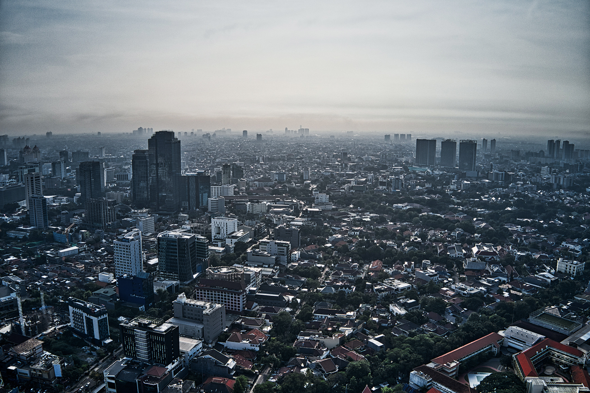

Sejarah
Sebelum ditetapkan sebagai ibu kota dan berkembang menjadi kota
terbesar Indonesia, wilayah yang saat ini dinamakan Jakarta
mempunyai riwayat yang sangat panjang. Riwayatnya sebagai tempat
hunian manusia dimulai ketika digunakan sebagai pemukiman sederhana
pada zaman prasejarah. Hal ini dapat diketahui dari situs-situs
kepurbakalaan prasejarah yang ada di Jakarta. Kemudian pada masa
kekuasaan Kerajaan Tarumanegara, atau sekitar abad ke-5 Masehi,
wilayah ini dikenal bernama Sunda Kelapa. Sejak saat itu, Sunda
Kelapa sempat beberapa kali mengalami perubahan nama dan terus
tumbuh sebagai kota pusat perdagangan hingga akhirnya menjadi kota
pusat kekuasaan seperti sekarang ini.
Pada periode Kerajaan Tarumanegara, Jakarta yang masih menggunakan
nama Sunda Kelapa tumbuh menjadi sebuah kota pusat perdagangan.
Menurut kesaksian para musafir Portugis, Sunda Kelapa dipimpin oleh
pejabat-pejabat tinggi seperti Tumenggung Sang Adipati dan
syahbandar. Kelimpahan hasil perdagangan itulah yang memikat bangsa
Portugis di Malaka untuk membangun benteng di Sunda Kelapa. Namun,
sebelum rencana itu berjalan, Pangeran Fatahillah lebih dulu merebut
Sunda Kelapa pada 1527 dan mengubah namanya menjadi Jayakarta. Pada
1959, status Kota Jakarta mengalami perubahan dari kotapraja menjadi
daerah tingkat satu yang dipimpin oleh gubernur. Kemudian pada 1961,
statusnya diubah menjadi Daerah Khusus Ibukota (DKI).
Geografis

Jakarta terletak di pesisir bagian barat laut Pulau Jawa. Dahulu
pernah dikenal dengan beberapa nama di antaranya Sunda Kelapa,
Jayakarta, dan Batavia. Jakarta juga mempunyai julukan The Big
Durian karena dianggap kota yang sebanding New York City (Big Apple)
di Indonesia.
Jakarta memiliki luas sekitar 664,01 km² (lautan: 6.977,5 km²),
dengan penduduk berjumlah 10.562.088 jiwa (2020). Wilayah
metropolitan Jakarta (Jabodetabek) yang berpenduduk sekitar 28 juta
jiwa.
Wisata
Kota Tua
Kota Tua Jakarta juga dikenal dengan nama Kota Tua Batavia.
Kawasan Kota Tua Jakarta ini melintasi wilayah Jakarta Utara dan
Jakarta Barat. Kawasan ini memiliki luas sekitar 139 hektar dengan
dominasi bangunan arsitektur Eropa dan Cina dari abad ke-17 hingga
awal abad ke-20. Kota Tua Jakarta terdiri dari berbagai macam
tempat hiburan, seperti museum, penyewaan sepeda untuk
berkeliling, restoran/rumah makan, dan lain-lain. Kota Tua Jakarta
juga berdekatan dengan Stasiun Jakarta Kota. Berikut ini nama-nama
museum di Kota Tua Jakarta.
Monumen Nasional (Monas)
Monumen Nasional atau yang disingkat dengan Monas atau Tugu Monas
adalah monumen peringatan setinggi 132 meter yang terletak tepat
di tengah Lapangan Medan Merdeka, Jakarta Pusat. Monas didirikan
untuk mengenang perlawanan dan perjuangan rakyat Indonesia dalam
merebut kemerdekaan dari pemerintahan kolonial Kekaisaran Belanda.
Pembangunan dimulai pada 17 Agustus 1961 di bawah perintah
presiden Soekarno dan diresmikan sehingga dibuka untuk umum pada
12 Juli 1975. Tugu ini dimahkotai lidah api yang dilapisi lembaran
emas yang melambangkan semangat perjuangan yang menyala-nyala dari
rakyat Indonesia. Tugu dan museum buka setiap hari mulai pukul
08:00 hingga 16:00 WIB sepanjang minggu kecuali hari Senin saat
tugu tutup. Sejak April 2016, monumen ini juga buka pada malam
hari mulai pukul 19:00 hingga 22:00 WIB pada hari Selasa hingga
Jumat dan mulai pukul 19:00 hingga 00:00 WIB pada hari Sabtu dan
Minggu.